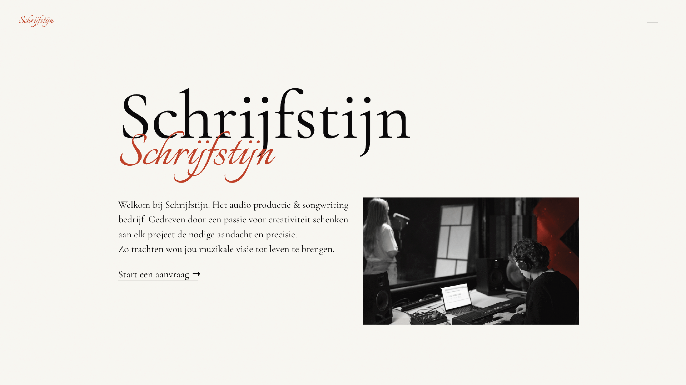
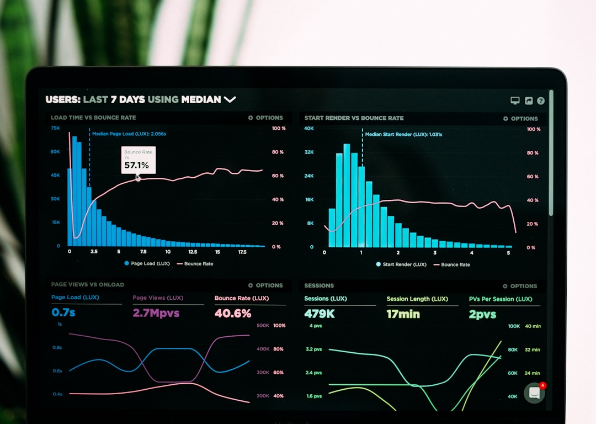
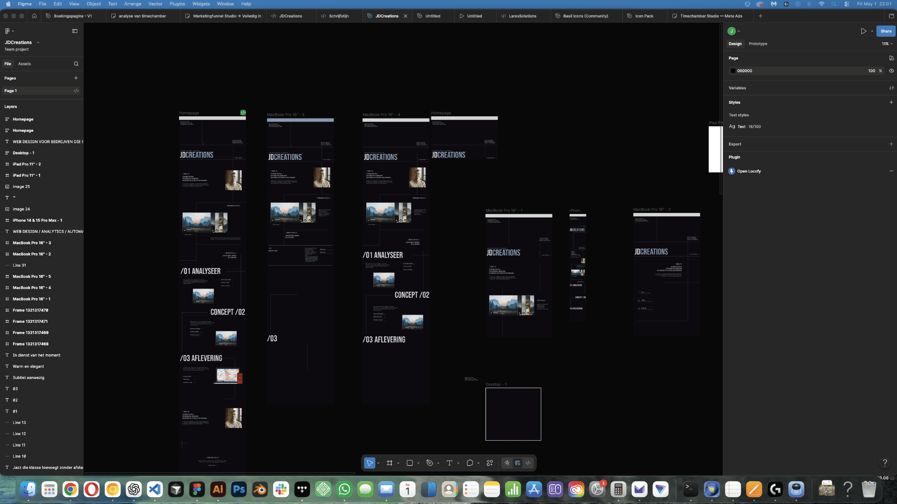
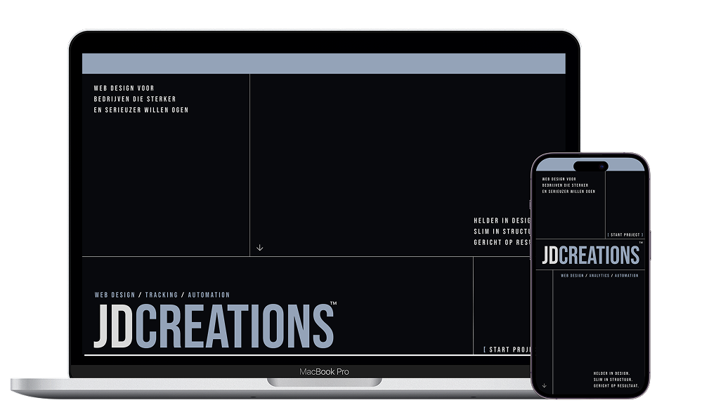

Ik ben Jari, designer en builder van branded websites waarin design, UX, CRO en automation samenkomen in één helder digitaal systeem.
[ Meer over JDC → ]Geen massa-aanpak, maar gerichte projecten waarin design, structuur en digitale opvolging samenkomen.

Website ontworpen met focus op
duidelijkheid, conversie en
meetbare opvolging.
We brengen in kaart hoe uw bedrijf vandaag overkomt, waar structuur ontbreekt en wat de website strategisch moet ondersteunen.

Hier vertalen we de analyse naar een eerste designrichting. Samen bekijken we of die in lijn ligt met uw merk en bouwen we daarop verder.

In deze fase wordt de website volledig uitgewerkt voor desktop, tablet en mobiel. Na een finale revisie wordt alles netjes opgeleverd.
